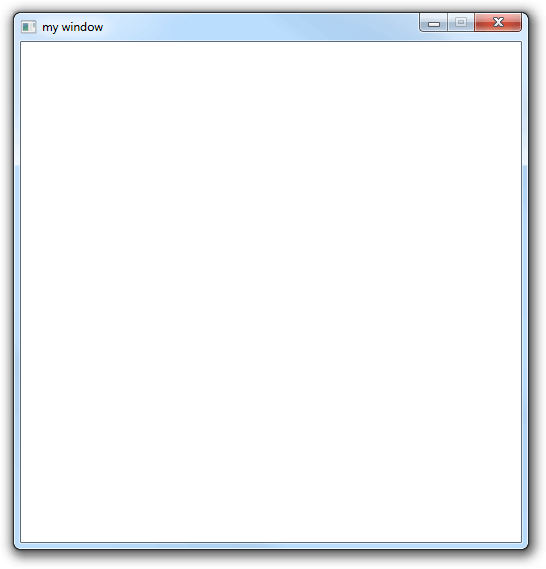

Let's make a small library like GLFW to open a window and display a bitmap on it. The library must be easy to use and to integrate into a project, it must also be cross-platform. The complete source code can be found here.
Building our program should not require any build system like CMake, instead we will use a simple script to compile for each operating system.
For windows with GCC:
gcc.exe main.c -l gdi32 -mwindows
build_windows_gcc.bat
Or with MSVC:
vcvarsall.bat
cl main.c user32.lib gdi32.lib /link /SUBSYSTEM:WINDOWS /ENTRY:mainCRTStartup
build_windows_msvc.bat
On Linux with X11:
#!/bin/bash
gcc main.c -l X11 -D X11
build_linux_x11.sh
Or with Wayland:
#!/bin/bash
gcc main.c -l wayland-client -D WAYLAND
build_linux_wayland.sh
We want to abstract all the ugly platform specific details and display a blank window simply like this:
#include "window.h"
int main(){
int err = create_window("my window", 500, 500);
if(err){
return 1;
}
while(event_loop()){
}
return 0;
}
main.c
The window.h header file will contain all the functions we need to create and manipulate a window, we will implement each one depending on the target OS and windowing system.
#pragma once
#include <stdio.h>
#include <stdlib.h>
#include <stdint.h>
int window_width, window_height;
#ifdef _WIN32
// Windows implementation
#elif __linux__
#ifdef X11
// Linux with X11 implementation
#elif WAYLAND
// Linux with Wayland implementation
#endif
#endif
window.h
Let's first make a blank window using the Win32 API. To understand what each functions does exactly, search for it in the Windows documentation.
/* IMPORTANT NOTE
Keep variable names explicit, "hwnd" doesn't make any sense but
"window_handle" does. The windows API is confusing enough, don't
make it worse with unreadable variable names.
*/
#include <windows.h>
HWND window_handle;
void close_window(){
DestroyWindow(window_handle);
UnregisterClass("WindowClass", GetModuleHandle(0));
}
/* This function handles the events (messages) that our window
receives, for now we are only handling closing our window (WM_CLOSE) */
LRESULT CALLBACK window_procedure(HWND window_handle, UINT message, WPARAM w_param, LPARAM l_param){
switch(message){
case WM_CLOSE:
close_window();
break;
case WM_DESTROY:
PostQuitMessage(0);
break;
default:
return DefWindowProc(window_handle, message, w_param, l_param);
}
return 0;
}
/* This function formats the error code returned by GetLastError()
into a string, and prints it along with the error message we passed to it */
void print_last_error(char* msg){
wchar_t buff[256];
FormatMessageW(FORMAT_MESSAGE_FROM_SYSTEM |
FORMAT_MESSAGE_IGNORE_INSERTS |
FORMAT_MESSAGE_MAX_WIDTH_MASK,
NULL, GetLastError(),
MAKELANGID(LANG_NEUTRAL, SUBLANG_DEFAULT),
buff, (sizeof(buff)/sizeof(wchar_t)), NULL);
fprintf(stderr, "%s, %S\n", msg, buff);
}
int create_window(char* title, int width, int height){
window_width = width;
window_height = height;
/* A window class is a structure that defines attributes
that we can use for multiple windows (for example the icon).
We will only set the minimum required attributes for now */
const char* window_class_name = "WindowClass";
WNDCLASS window_class = {0};
window_class.lpfnWndProc = window_procedure;
window_class.hInstance = GetModuleHandle(0);
window_class.lpszClassName = window_class_name;
if(!RegisterClass(&window_class)){
print_last_error("RegisterClass: Error when creating window class");
return 1;
}
DWORD window_style = WS_OVERLAPPED | WS_CAPTION | WS_SYSMENU | WS_MINIMIZEBOX;
/* We want the inside of the window (client area) to be width*height.
To do that we have to calculate the size of the whole window which is
size of the client area + size of the window decoration (title bar, borders)
*/
RECT window_rect = {0, 0, window_width, window_height};
AdjustWindowRect(&window_rect, window_style, FALSE);
window_handle = CreateWindowEx(0,
window_class_name,
title,
window_style,
CW_USEDEFAULT, CW_USEDEFAULT,
window_rect.right-window_rect.left,
window_rect.bottom-window_rect.top,
NULL, NULL, GetModuleHandle(0), NULL);
if(!window_handle){
print_last_error("CreateWindowEx: Error when creating window");
return 1;
}
ShowWindow(window_handle, 5);
return 0;
}
int event_loop(){
MSG message;
int ret = GetMessage(&message, NULL, 0, 0);
TranslateMessage(&message);
DispatchMessage(&message);
return ret;
}
window.h
Here is the full code. We get this result:
To call the X11 documentation bad would be an understatement, the best resource I could find is The Xlib Manual.
#include <X11/Xlib.h>
#include <X11/Xutil.h>
Display* display;
Window window;
Atom delete_window_atom;
int create_window(char* title, int width, int height){
window_width = width;
window_height = height;
display = XOpenDisplay(0);
if(display == NULL){
fprintf(stderr, "XOpenDisplay: Error opening display\n");
return 1;
}
/* We will need the visual information and the colormap later when
displaying a bitmap */
XVisualInfo visual_info;
XMatchVisualInfo(display, DefaultScreen(display), 32, TrueColor, &visual_info);
XSetWindowAttributes window_attributes;
window_attributes.colormap = XCreateColormap(display, DefaultRootWindow(display), visual_info.visual, AllocNone);
window_attributes.border_pixel = 0;
window_attributes.background_pixel = 0;
window = XCreateWindow(display, DefaultRootWindow(display),
0, 0, width, height, 0,
visual_info.depth,
InputOutput,
visual_info.visual,
CWColormap | CWBorderPixel | CWBackPixel,
&window_attributes);
XSetStandardProperties(display, window, title, title, None, NULL, 0, NULL);
/* We tell the window manager how large we want our window to be.
We can't enforce this, hence why it's called a hint. */
XSizeHints size_hints;
size_hints.flags = PMinSize | PMaxSize;
size_hints.min_width = window_width;
size_hints.min_height = window_height;
size_hints.max_width = window_width;
size_hints.max_height = window_height;
XSetWMNormalHints(display, window, &size_hints);
XSelectInput(display, window, ExposureMask | KeyPressMask | KeyReleaseMask);
/* An event returned from the window manager when clicking the close
button */
delete_window_atom = XInternAtom(display, "WM_DELETE_WINDOW", 0);
XSetWMProtocols(display, window, &delete_window_atom, 1);
XMapWindow(display, window);
return 0;
}
int event_loop(){
XEvent event;
XNextEvent(display, &event);
if(event.type == ClientMessage){
if(event.xclient.data.l[0] == delete_window_atom){
return 0;
}
}
return 1;
}
void close_window(){
XDestroyWindow(display, window);
XCloseDisplay(display);
}
Here is the full code. We get this result:
#include "window.h"
#define STB_IMAGE_IMPLEMENTATION
#include "stb_image.h"
int main(){
int width, height, channels;
unsigned char* data = stbi_load("peppers.png", &width, &height, &channels, 3);
if(!data){
return 0;
}
init_buffer(width, height);
for(int i = 0; i < width*height; i++){
/* We store each pixel color in a 32 bits integer.
The first 8 bits are alpha, followed by RGB in 24 bits.
For example the color rgba(255, 0, 0, 255) becomes 0xFFFF0000
*/
buffer[i] = (0xff<<24)+(data[i*3]<<16)+(data[i*3+1]<<8)+data[i*3+2];
}
int err = create_window("my window", 512, 512);
if(err){
return 1;
}
while(event_loop()){
}
return 0;
}
main.c
We define the init_buffer function in window.h:
#pragma once
#include <stdio.h>
#include <stdlib.h>
#include <stdint.h>
int window_width, window_height;
uint32_t* buffer;
void init_buffer(int width, int height){
buffer = malloc(width*height*sizeof(uint32_t));
}
...
window.h
HWND window_handle;
BITMAPINFO bitmap_info = {0};
void draw_buffer(HDC device_context){
StretchDIBits(device_context, 0, 0, window_width, window_height,
0, 0, window_width, window_height, buffer, &bitmap_info,
DIB_RGB_COLORS, SRCCOPY);
}
LRESULT CALLBACK window_procedure(HWND window_handle, UINT message, WPARAM w_param, LPARAM l_param){
switch(message){
case WM_PAINT: {
PAINTSTRUCT paint;
HDC device_context = BeginPaint(window_handle, &paint);
draw_buffer(device_context);
EndPaint(window_handle, &paint);
break;
}
case WM_CLOSE:
close_window();
break;
...
window.h
We also specify the dimension and depth of our DIB (A "Device-Independent Bitmap", which for our purposes is just a bitmap):
int create_window(char* title, int width, int height){
...
bitmap_info.bmiHeader.biSize = sizeof(bitmap_info.bmiHeader);
bitmap_info.bmiHeader.biWidth = window_width;
/* We specify a negative height so our DIB is displayed
top to bottom */
bitmap_info.bmiHeader.biHeight = -window_height;
/* This is always 1 */
bitmap_info.bmiHeader.biPlanes = 1;
/* 32 bits for each pixel */
bitmap_info.bmiHeader.biBitCount = 32;
/* We don't use any image compression */
bitmap_info.bmiHeader.biCompression = BI_RGB;
ShowWindow(window_handle, 5);
return 0;
}
window.h
Here is the full code. We get this result:
Here is the full code. We get this result: